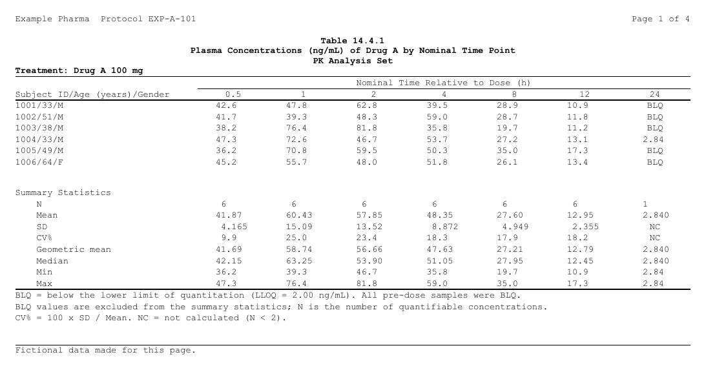
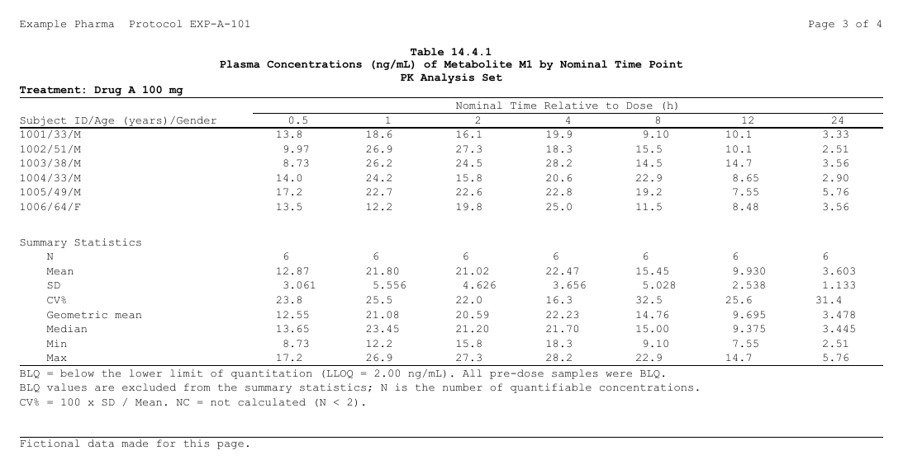

PK 濃度の表では、被験者ごとの濃度を時点ごとに並べ、その下の同じ列に要約統計量を置くことが よくあります。2 つの部分の元は別々（レコードと、その統計量の ARD）ですが、1 つの表です。 列見出しも列幅も 1 つで、分析対象と投与群ごとのページに、そのグループの両方の部分が載ります。
rtfreporter では、それぞれの部分が普通の plan で、
plan_append() が 2 つ目の行を 1
つ目の行の下に並べます。この記事では、架空の試験でその表を作ります。
データ
Example Pharma の架空の試験です。Drug A 100 mg と 200 mg に各 6
人、投与後の 7 つの 名目時点で、Drug A とその代謝物 M1
の血漿中濃度を測りました。定量下限（LLOQ）は 2.00 ng/mL
で、それ未満の検体は BLQ（AVAL
が欠測）です。投与前の検体はすべて BLQ なので、 表は 0.5 h
から始めます。
Show code
set.seed(20261102)
subj <- data.frame(USUBJID = as.character(1001:1012),
ARM = rep(c("Drug A 100 mg", "Drug A 200 mg"), each = 6),
AGE = sample(28:64, 12, replace = TRUE),
SEX = sample(c("M", "F"), 12, replace = TRUE),
dose = rep(c(100, 200), each = 6))
tpt <- data.frame(ATPTN = c(0.5, 1, 2, 4, 8, 12, 24),
ATPT = c("0.5", "1", "2", "4", "8", "12", "24"))
analyte <- data.frame(ANALYTE = c("Drug A", "Metabolite M1"),
frac = c(1, 0.3), ke = c(0.17, 0.09))
adpc <- merge(merge(subj, tpt, by = NULL), analyte, by = NULL)
conc <- with(adpc, frac * dose * 0.9 * 1.4 / (1.4 - ke) *
(exp(-ke * ATPTN) - exp(-1.4 * ATPTN)))
conc <- conc * stats::rlnorm(nrow(adpc), 0, 0.25)
adpc$AVAL <- ifelse(conc < 2, NA_real_, signif(conc, 3)) # BLQ: 欠測
adpc <- adpc[order(adpc$ANALYTE, adpc$ARM, adpc$USUBJID, adpc$ATPTN),
c("USUBJID", "ARM", "AGE", "SEX", "ANALYTE", "ATPT", "AVAL")]
head(adpc)#> USUBJID ARM AGE SEX ANALYTE ATPT AVAL
#> 1 1001 Drug A 100 mg 33 M Drug A 0.5 42.6
#> 13 1001 Drug A 100 mg 33 M Drug A 1 47.8
#> 25 1001 Drug A 100 mg 33 M Drug A 2 62.8
#> 37 1001 Drug A 100 mg 33 M Drug A 4 39.5
#> 49 1001 Drug A 100 mg 33 M Drug A 8 28.9
#> 61 1001 Drug A 100 mg 33 M Drug A 12 10.92 つの部分
リスティングは、レコードの plan です。1 行が 1
被験者、1 列が 1 時点で、セルに濃度が 入ります。行のラベルは被験者
ID・年齢・性別をつなげたもの（1001/33/M）で、BLQ の検体は
BLQ と出ます。濃度は報告どおり有効数字 3 桁で出します。
Show code
listing <- adpc |>
table_plan(cols = "ATPT", rows = c(subject = ~ "{USUBJID}/{AGE}/{SEX}"),
value = "AVAL") |>
plan_cells("{value:.3s}", na = "BLQ")要約は、定量できた濃度の
ARD（分析対象・投与群・時点ごと）の plan です。定数の行キー
（block = ~ "Summary Statistics"）が、統計量の上の見出し行になります。平均・SD・幾何平均・
中央値はデータより有効数字を 1 桁多く、最小・最大はデータと同じ桁、CV%
は小数 1 桁です。計算できない統計量（値が 1 つの SD など）は
na の NC になり、見出し行は空のままです。
Show code
pk_stats <- ~ list(N = length, mean = mean, sd = stats::sd,
cv = function(x) 100 * stats::sd(x) / mean(x),
geo_mean = function(x) exp(mean(log(x))),
median = stats::median, min = min, max = max)
ard <- cards::ard_summary(adpc[!is.na(adpc$AVAL), ], by = c(ANALYTE, ARM, ATPT),
variables = AVAL, statistic = pk_stats)
summary <- normalize_ard(ard) |>
table_plan(cols = "ATPT", rows = c(block = ~ "Summary Statistics")) |>
plan_cells(continuous = c(N = "{N:.0f}", Mean = "{mean:.4s}", SD = "{sd:.4s}",
"CV%" = "{cv:.1f}", "Geometric mean" = "{geo_mean:.4s}",
Median = "{median:.4s}", Min = "{min:.3s}", Max = "{max:.3s}"),
na = "NC")どちらも普通の plan
として単独で動きます。plan_apply(summary, "table")
は、全グループの 要約を一度に並べたものです。
1 つの表にする
listing
が親で、表の列の軸と列見出しは親のものです。plan_append(summary)
が、
要約の行をリスティングの行の下に並べます。続けて表全体の設定を書きます。列の順、部分の間の
空行、両方にかかる列見出し、列幅と小数点揃え、分析対象と投与群ごとのページ、スタイルです。
Show code
pk <- listing |>
plan_append(summary, name = "summary") |>
plan_levels(ATPT = tpt$ATPT, ANALYTE = analyte$ANALYTE) |>
plan_blanks(where = "between_parts") |>
plan_col_header(rtf_col_header(
list(col_cell(1, ""), col_cell(c(2, nrow(tpt) + 1L), "Nominal Time Relative to Dose (h)")),
c("Subject ID/Age (years)/Gender", "{col}"))) |>
plan_columns(widths = c(label = 2.6, .values = 1), decimal = ".values") |>
plan_paginate_rows(page_by = c("ANALYTE", "ARM")) |>
plan_style(border = "tfl") |>
plan_after(function(x) lapply(x, style_zone, last_row = rtf_border(bottom = TRUE)))部分はページに分ける前に積み重なるので、Drug A
/ Drug A 100 mg のページには、
そのグループのリスティングの行と、続いて同じグループの要約の行が載ります（値で対応させます）。
タイトルの {ANALYTE} と {ARM}
には、各ページの値が入ります。
Show code
doc <- rtf_document(tokens = list(STUDY = "EXP-A-101")) |>
rtf_section(header = rtf_header(list(c(l = "Example Pharma Protocol {STUDY}",
r = "Page {PAGE} of {TOTAL_PAGES}"))),
footer = rtf_footer(list(c(l = "Fictional data made for this page.")))) |>
rtf_tables(pk,
titles = list(list("Table 14.4.1",
"Plasma Concentrations (ng/mL) of {ANALYTE} by Nominal Time Point",
"PK Analysis Set",
list(text = "Treatment: {ARM}", align = "left"))),
footnotes = list(c(
"BLQ = below the lower limit of quantitation (LLOQ = 2.00 ng/mL). All pre-dose samples were BLQ.",
"BLQ values are excluded from the summary statistics; N is the number of quantifiable concentrations.",
"CV% = 100 x SD / Mean. NC = not calculated (N < 2).")))
rtf_layout(doc)#> rtf_pages: 4 blocks on 4 pages (letter landscape, 9 pt)
#> page 1 [sec 1] Drug A, Drug A 100 mg rtftable 16 rows (1/4) title 4 foot 3
#> page 2 Drug A, Drug A 200 mg rtftable 16 rows (2/4) title 4 foot 3
#> page 3 Metabolite M1, Drug A 100 mg rtftable 16 rows (3/4) title 4 foot 3
#> page 4 Metabolite M1, Drug A 200 mg rtftable 16 rows (4/4) title 4 foot 3
generate_rtfreport(doc, "pk_conc.rtf", overwrite = TRUE)1 ページ目（Drug A、100 mg）:

3 ページ目（代謝物、100 mg）。同じ列に、そのグループの行が載ります:

決まり
表全体の設定は親のもので、親のどこに書いてもかまいません。
列の順、列見出し、列幅と
小数点揃え、ページ、部分の間の空行、スタイル、タイトル、脚注、後の処理は、部分ではなく表の
ものです。plan_append() の前でも後でもよく、2
つあれば、いつものとおり後のほうが勝ちます。
Show code
pk_before <- listing |>
plan_levels(ATPT = tpt$ATPT, ANALYTE = analyte$ANALYTE) |>
plan_paginate_rows(page_by = c("ANALYTE", "ARM")) |>
plan_append(summary, name = "summary")
pk_after <- listing |>
plan_append(summary, name = "summary") |>
plan_paginate_rows(page_by = "ANALYTE") |> # 下で置き換わる
plan_levels(ATPT = tpt$ATPT, ANALYTE = analyte$ANALYTE) |>
plan_paginate_rows(page_by = c("ANALYTE", "ARM"))
identical(plan_apply(pk_before), plan_apply(pk_after))#> [1] TRUE部分が言うのは自分の行の作り方だけで、表全体のことは言いません。 セル・桁数・ラベル・ 空のセルの文字・行キーの水準は部分のもので、部分が言わないことは親から受け継ぎます。表全体の 設定を部分に書くとエラーになり、どこに書くかを示します。
listing |>
plan_append(summary |> plan_col_header(rtf_col_header(c("", "{col}"))))
#> Error:
#> ! plan_append("part2"): a part says how its own rows are made, and the whole table's
#> settings are the first plan's, written before or after plan_append(). Move to the first plan:
#> plan_col_header()
#> (A part may carry plan_cells, plan_digits, plan_labels, plan_levels of its row keys,
#> plan_stub, plan_row_group, plan_filter, plan_sort, plan_nest, plan_total, plan_compare,
#> plan_stat_groups, plan_hide, plan_empty, plan_cell_style(where = ), plan_blanks(first = , last = ).)ページのグループは、すべての部分にそろっている必要があります。
ページには、そのグループの
親の行と、同じグループの各部分の行が載ります。親にあって部分に無いグループはエラーです
（欠けたグループで帳票は定義できないため）。absent = "skip"
を付けると、そのページには その部分の行が載りません。
Show code
# 200 mg の代謝物が無い要約
ard_part <- ard[!(ard$group1_level %in% list("Metabolite M1") &
ard$group2_level %in% list("Drug A 200 mg")), ]
summary_part <- normalize_ard(ard_part) |>
table_plan(cols = "ATPT", rows = c(block = ~ "Summary Statistics")) |>
plan_cells(continuous = c(N = "{N:.0f}", Mean = "{mean:.4s}"))
pk_missing <- listing |>
plan_append(summary_part) |>
plan_paginate_rows(page_by = c("ANALYTE", "ARM"))
invisible(plan_apply(pk_missing))#> Error:
#> ! plan_append("part2"): no rows for the page groups 'Metabolite M1, Drug A 200 mg', which the first plan has.
#> A page holds every part's rows of one value of 'ANALYTE' / 'ARM'. Give the part the rows, or
#> plan_append(absent = "skip") to leave it off that page.Show code
pk_skip <- listing |>
plan_append(summary_part, absent = "skip") |>
plan_paginate_rows(page_by = c("ANALYTE", "ARM"))
length(plan_apply(pk_skip)) # 4 ページ。最後のページはリスティングだけ#> [1] 4次に読む
-
plan_append()— リファレンス（部分に書ける動詞の一覧） - Plans and as_rtftables() — plan とは
-
Pagination —
page_byと、列の分け方 - 1 ページに複数のコンテンツを置く — 別々の表 2 つや、表と図を 1 ページに